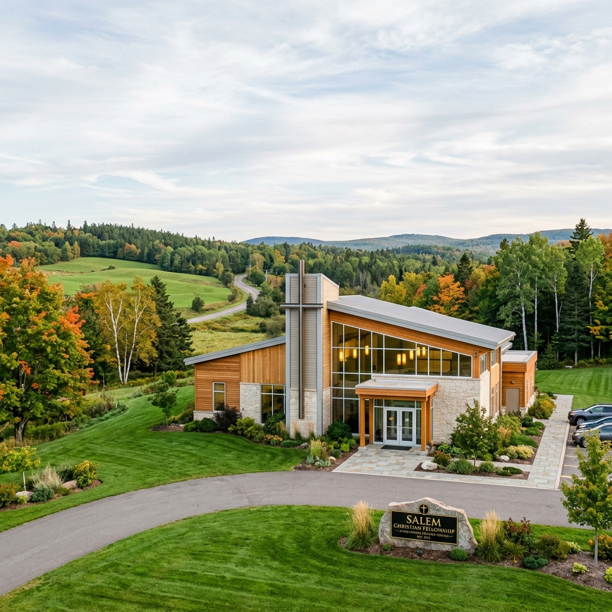
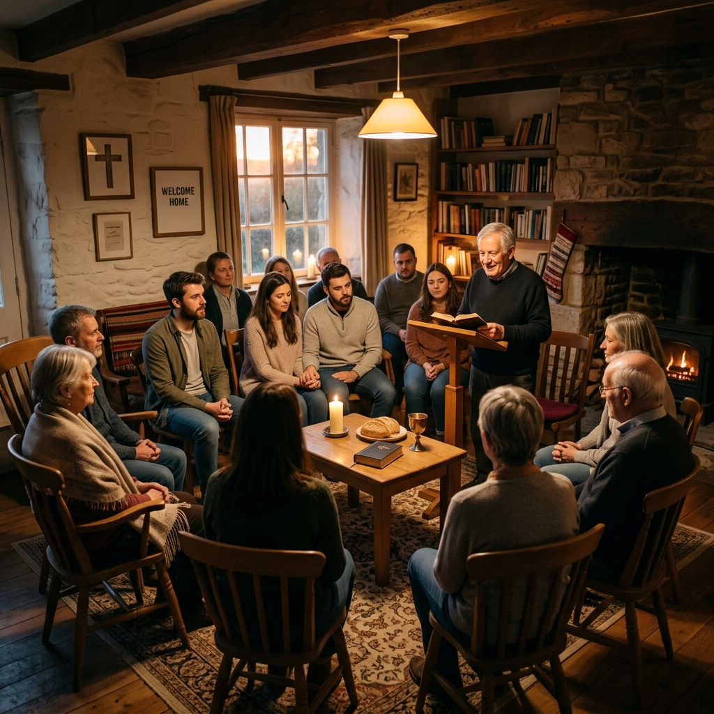
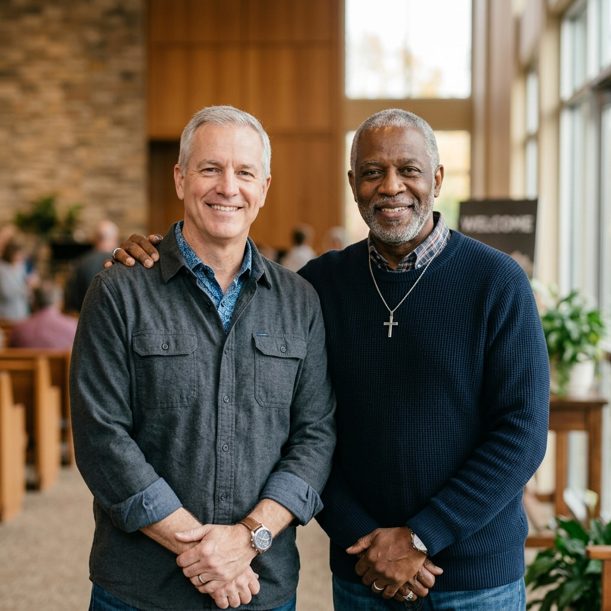

About Victory Christian Fellowship
Our Story & Mission
Rooted in scripture, growing in faith, and sharing the grace of Jesus Christ with Stanley, NB since 1999.
How It Began
Born Out of a Desire to Follow Jesus
Victory Christian Fellowship was born out of a desire to follow Jesus and obey His commands.
We began to study the Bible and found ourselves being convicted of sin, but also delivered from it. What began as a desire to see the church we were in revived changed when we realized that most in our setting were content or else resigned to the lifestyles of carnality and immorality.
In March of 1999, we started meeting in homes as a small group of believers. Our searching of the Scriptures continued, and the Lord brought people as we were ready, raising up many spiritual gifts that were needed.

Leadership
Meet Our Elders & Deacons
Elders and deacons serving the flock with humility, truth, and love.

Elder
Deacon
Peter Driedger
What We Believe
Statement of Faith
A summary of the biblical doctrines that guide our teaching and practice.
01
We believe in the authority of the Holy Bible, the written Word of God. It was written by holy men as they were moved by the Holy Spirit.
02
We believe in God the Father, that He is the Creator of Heaven and Earth.
03
We believe that Jesus Christ is the Son of God, sent to earth to save all who believe in Jesus as the Christ, from eternal damnation.
04
We believe that Jesus Christ was born of the virgin Mary and walked a sinless life on earth, and in so doing He broke the power and bondage of sin and death.
05
We believe that the body of Christ is one body, made up of a myriad of believers across the globe. All who believe in Jesus Christ are born again and accepted into the body of Christ.
06
We believe that commitment to a local body is vital for the health of the Christian.
07
We believe in baptism upon the confession of faith; it is the answer of a good conscience towards God, an act of obedience.
08
We believe that communion is a remembrance of the physical death of Jesus Christ to make an atonement for our sins. The bread and fruit of the vine is a symbol of His broken body and shed blood.
09
We believe that having suffered, Jesus Christ rose again from the dead, and ascended to heaven, where He lives and makes intercession for us!
10
We believe that the Holy Spirit has come to indwell the hearts of all believers, empowering us to live a holy life, free from the bondage of sin.
11
We believe that the Christian can still, and does still choose to sin at times, though we are no longer under the power of sin. If any man sins, we have an advocate with the Father, Jesus Christ the Righteous.
12
We believe that Jesus Christ is returning to bring a final judgement to this earth and take His redeemed home.
13
We believe that a Christian's faith is observable: he that doeth righteousness is righteous, and he that doeth truth cometh to the light that his deeds may be made manifest that they are wrought in God.
14
We believe in God's order of headship: God, Christ, Man, Woman.
15
To signify our submission to God's headship order, men do not cover their heads to pray and prophesy, and women do not uncover their heads to pray and prophesy.
16
We believe and contend earnestly to share Jesus Christ with the world around us, both local and afar, to turn people's hearts from sin to serve the living God. His name be praised both now and forever! Amen.